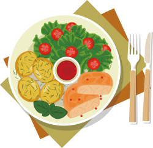
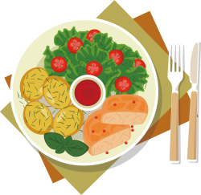
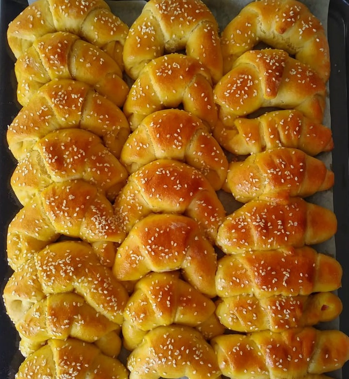

Crescent Rolls
If you want comfort food, then you came to the right place! These crescent rolls are the cloud-like, softest rolls that you will ever try. So easy to make, and so perfect for those times when friends are coming over, and even more perfect for ideal sunday breakfasts. Try making them today, you will definitely not regret that decision.
Time to prepare:2 hours
Ingredients:
- 800 grams of plain flour
- 1 pack of dry yeast (10 grams)
- 2 eggs
- 400 mililiters of warm milk
- 180 mililiters of oil
- 1 tbsp of sugar
- 1 tsp of salt
Preparing:
1. Pour the warm milk in one bigger bowl, and then add to it 2 eggs, oil, sugar and dry yeast as well. Mix it all up.
2. Slowly add just one part of the flour, and 1 teaspoon of salt, and then keep adding the rest of the flour slowly, while mixing it constantly.
3. Put some flour on your worktop. Place your dough on the worktop, and keep mixing it until it becomes smooth. Coat the dough with the oil, as well as the bowl where you will put the dough. Cover the dough up with nylon foil, and leave it to rest on a warm (room temperature) place for at least an hour. The longer it sits, the softer the rolls will be.
4. When the doigh has rested, place it on the flour coated worktop, and roll it up with your rolling pin. Slice the dough on equal little quadrants. For this quantity, I have obtained 24 little quadrants.
5. You may roll the dough up just like that and leave it empty, or you can fill the dough with whatever you want. If you want, you can put cheese or ham for the salty version, or chocolate spread cream or simply jam for the sweet version. I like leaving them empty, and then eating them warm from the oven.
6. Roll the quadrant up a little bit more, and then roll it from the ends to obtain the crescent moon shape. Place the rolls on the baking tray, and coat them with yolks. If you wish, you may put some sesame seeds or sea salt on the top.
7. Bake the rolls on 160 degrees Celsius for 20 minutes.